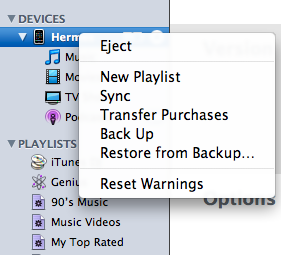

Words / posts / Just Blogging/ TechLife
How to get the iPhone to stop automatic back ups
This is a problem that irritated me so many times - I'm so glad I found a solution now, thanks to this blog post. Basically the issue is that every time you link up your iPhone for syncing contacts or songs the whole damn application library gets backed up automatically.
Which obviously takes longer and longer with each new application you download .. I tried to disable the 'sync applications' option in iTunes but then a scary message appears:
Who wants all the applications being removed?????? Surely not me.
So, I'm just reporting the instructions as posted by this nice fellow who published them on the blog above:
1) Quit iTunes. 2) Open a Terminal (Applications > Utilities > Terminal) 3) Type or copy the following command: defaults write com.apple.iTunes AutomaticDeviceBackupsDisabled -bool true 4) Open iTunes. 5) Connect the iPhone. 6) Make Sync without backing up.
To enable automatic backup in iTunes again use this command instead: defaults write com.apple.iTunes AutomaticDeviceBackupsDisabled -bool false
That should do the trick! I tried it and the following sync took less than a minute.
Only thing to remember: making backups is not at all a bad idea, so make sure you do it manually every once in a while!

...
Cite this post
Michele Pasin. How to get the iPhone to stop automatic back ups. Blog post on www.michelepasin.org, 20 May 2009.
Talk back / comments via github